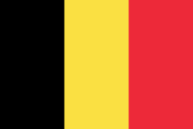

Il mito di Europa
Introduzione
Il continente europeo è stato la culla di molte civiltà nel corso della storia.
Nel bene e nel male l'europa è stata teatro di scontri terribili, rivoluzioni e grandi scoperte. In questa pagina esploreremo la storia del continente, dall'europa all'unione europea.
In pochi, oggi, ricordano che il nome Europa appartiene al mito. Un mito che parla di sopraffazione e inganno, ma anche di resistenza e rinascita. Valori che troviamo all’inizio e alla fine del secondo conflitto mondiale. Quando mancò davvero poco all’Europa per restare solo un mito, appunto.
Media
Trama
Dall'etimologia alla geografia
Un primo utilizzo di Europa in senso geografico si rinviene in uno degli anonimi inni omerici, così chiamati perché attribuiti a Omero per via dello stile usato. È tuttora discussa l’etimologia dell’antica parola greca Εὐρώπη (Európē). Si ipotizza possa essere l’unione di due altri termini che significherebbero ampio e occhio.
Probabilmente tale parola serviva a identificare i vasti territori settentrionali di cui i Greci non potevano conoscere con esattezza i confini.
Un altro riferimento risale a Ecateo di Mileto. Il geografo greco (citato da Erodoto nelle Storie) riteneva che il mondo comprendesse due continenti separati dal Mar Mediterraneo: l’Europa verso nord e l’Asia che comprendeva parte del Nordafrica. Una prima carta geografica riportante un abbozzo dell’Europa fu disegnata dal filosofo Anassimandro, anche lui di Mileto e cartografo.
Mentre col termine φοίνικες (Phoinikes) i Greci identificavano i popoli stanziati sulle coste orientali del Mediterraneo (corrispondenti all’odierna Siria). A loro volta i Fenici usavano il termine ereb(cioè ‘tramonto’), per riferirsi alle terre occidentali. Potrebbe essere questa l’origine del termine Europa, secondo un’altra teoria alternativa a quella del mito greco.
Evoluzione del concetto di Europa
Dall'Europa Ellenica all'Europa Romana
Dalla cultura greca l’idea di Europa si trasmise a quella romana. Ma per i Romani questa idea fu ben poco vitale. I Romani preferirono utilizzare le espressioni Occidente (Occidens) e Oriente (Oriens) piuttosto che «Europa», relegando questo termine e il relativo «Europei» al solo territorio di una piccola provincia nell’estremo lembo orientale dell’impero, coincidente con l’attuale zona europea della Turchia

Dall'Europa Romana all'Europa Medievale
Come per i Romani sull’idea di Europa prevalse quella di Romanità, così nella cultura medievale prevalse quella di Cristianità. Questo termine esprimeva l’identità del mondo civile, in quanto cristiano, contrapposto al mondo barbaro e pagano.
Infatti nel Medioevo il termine Europeensis, «europeo», rimanse praticamente ignoto e per indicare gli abitanti del continente si usava invece il termine fideles, «fedeli».E dunque si consolidò un’Europa cristiana.
L’imperatore Carlo Magno è spesso ricordato nei documenti dell’epoca come rex pater Europae («re e padre dell’Europa») o Europae venerandus apex («venerando culmine dell’Europa»), ma in questi appellativi il riferimento all’Europa è puramente geografico.


Dall'Europa medievale all'Europa Moderna
A partire dal XV secolo, presero progressivamente forma gli stati nazionali moderni, governati da monarchie e infine, solo nel XIX secolo, seppure in un contesto di accesi nazionalismi, l’Europa venne intesa come patria spirituale e culturale degli europei, qualunque fosse la loro nazione di origine. Ricordiamo, per esempio, che accanto alla “Giovine Italia”, associazione che lottava per l’indipendenza della nazione italiana, Giuseppe Mazzini fondò nel 1834 la “Giovine Europa”, un movimento transnazionale che mirava all’affermazione dei principi di fratellanza e associazione tra i popoli. Si trattava comunque di ideali professati da ristrette élite di intellettuali.
Per assistere alla concreta costruzione dell’unità politica dell’Europa, e alla nascita dell’Unione Europea, bisognerà aspettare il XX secolo, a ridosso dei due grandi conflitti mondiali.


L'unione europea
Una timeline
1945-1958
La pace in Europa
&
Gli inizi della cooperazione
L’Unione europea nasce con lo scopo di mettere fine alle guerre frequenti e sanguinose tra Paesi limitrofi, che raggiunsero l’apice nella seconda guerra mondiale.
- Negli anni Cinquanta la Comunità europea del carbone e dell’acciaio comincia ad unire i Paesi europei sul piano economico e politico al fine di garantire una pace duratura. I sei membri fondatori sono il Belgio, la Francia, la Germania, l’Italia, il Lussemburgo e i Paesi Bassi.
- Gli anni Cinquanta sono caratterizzati dalla guerra fredda tra Est ed Ovest.
- Le proteste in Ungheria contro il regime comunista sono represse dai carri armati sovietici nel 1956.
- Nel 1957, il trattato di Roma istituisce la Comunità economica europea (CEE), o "Mercato comune".
1960-1969
Un periodo di crescita economica
Gli anni '60 sono un buon periodo per l’economia, grazie anche al fatto che i Paesi dell’UE non applicano più dazi doganali agli scambi reciproci.
- Essi inoltre condividono l’idea del controllo comune della produzione alimentare, garantendo così il sufficiente approvvigionamento di tutta la popolazione, e ben presto si comincia addirittura a registrare un surplus di produzione agricola.
- Il maggio 1968 è famoso in tutto il mondo per i moti studenteschi di Parigi, molti cambiamenti nella società e nel costume sono associati alla cosiddetta "generazione del ‘68".
1970-1979
Una comunità in crescita
&
il primo allargamento
Nel corso di questi anni si iniziò ad avere una visione più unitaria della comunità con l'adesione di altri stati e nuove politiche comuni
- Con l’adesione della Danimarca, dell’Irlanda e del Regno Unito il 1° gennaio 1973, il numero degli Stati membri dell’Unione europea sale a nove.
- Il breve ma cruento conflitto arabo-israeliano dell’ottobre 1973 scatena una forte crisi e vari problemi economici in Europa.
- Inoltre la caduta del regime di Salazar in Portogallo nel 1974 e la morte del generale Franco in Spagna nel 1975 decretano la fine delle ultime dittature di destra al potere in Europa.
- La politica regionale comunitaria comincia a destinare grandi somme di denaro alla creazione di nuovi posti di lavoro e di infrastrutture nelle aree più povere
- Il Parlamento europeo accresce la propria influenza nelle attività dell’UE e, nel 1979, viene eletto per la prima volta a suffragio universale.
- Negli anni ’70 si intensifica la lotta contro l’inquinamento, e l’UE adotta le leggi a tutela dell’ambiente, introducendo per la prima volta il concetto "chi inquina paga".
1980-1990
L’Europa cambia volto
&
La caduta del muro di Berlino
La caduta del muro di Berlino crea una svolta nella Germania dell’epoca, mentre altri Paesi aderiscono alla nascente Unione Europea.
- Nel 1981 la Grecia diventa il decimo Stato membro dell’UE, mentre il Portogallo e la Spagna aderiscono all’UE cinque anni dopo.
- Nel 1986 viene firmato l’Atto unico europeo, che pone le basi per un programma di sei anni finalizzato a risolvere i problemi che ostacolano la fluidità degli scambi tra gli Stati membri dell’UE e crea così il "Mercato unico".
- Si produce un grande sconvolgimento politico quando, il 9 novembre 1989, viene abbattuto il muro di Berlino e, per la prima volta dopo 28 anni, si aprono le frontiere tra Germania Est e Germania Ovest. Ciò porta alla riunificazione della Germania orientale e occidentale nell'ottobre 1990.
1990 - 1999
Un’Europa senza frontiere
Con il crollo del comunismo nell’Europa centrale ed orientale i cittadini europei si sentono più vicini.
- Nel 1993 viene completato il mercato unico in virtù delle "quattro libertà" di circolazione di beni, servizi, persone e capitali.
- Gli anni Novanta sono inoltre il decennio di due importanti trattati: il trattato di Maastricht sull’Unione europea (1993) e il trattato di Amsterdam (1999).
- I cittadini europei si preoccupano di come proteggere l’ambiente e di come i Paesi europei possano collaborare in materia di difesa e sicurezza.
- Nel 1995 aderiscono all’UE tre nuovi Stati membri: Austria, Finlandia e Svezia.
- Successivamente nascono gli accordi di ‘Schengen’ che, gradualmente, consentono ai cittadini di viaggiare liberamente senza controllo dei passaporti alle frontiere. Questo consente a milioni di giovani di studiare all’estero con il sostegno finanziario dell’UE.
- Viene semplificata anche la comunicazione, in quanto sempre più cittadini utilizzano il telefono cellulare ed Internet.
2000 - 2009
Ulteriore espansione
L’euro diventa la nuova moneta per molti europei, nel corso del decennio viene adottata da un sempre maggior numero di Paesi.
- L’11 settembre 2001 diventa sinonimo di terrore in seguito al dirottamento di aerei di linea che vengono fatti schiantare su alcuni edifici di New York e Washington.
- I Paesi dell’UE intraprendono una più stretta collaborazione per combattere la criminalità.
- Con l’adesione all’UE di ben 10 nuovi Stati membri nel 2004, seguiti da Bulgaria e Romania nel 2007, si ritengono definitivamente colmate le divisioni politiche tra Europa orientale e occidentale.
- Una crisi finanziaria colpisce l’economia mondiale nel settembre 2008.
- Il trattato di Lisbona viene ratificato da tutti i Paesi membri prima di entrare in vigore nel 2009, e con esso l’Unione europea si dota di istituzioni moderne e metodi di lavoro più efficienti.
2010 - 2019
Un decennio difficile
La crisi economica globale colpisce duramente l'Europa. L’UE aiuta numerosi Paesi ad affrontare le loro difficoltà e istituisce "l’Unione bancaria", allo scopo di rendere il settore bancario più sicuro e affidabile.
- Nel 2012 l'Unione europea riceve il premio Nobel per la pace.
- Nel 2013 la Croazia diventa il 28º Stato membro dell’UE.
- I cambiamenti climatici restano in cima all’agenda e i leader concordano di ridurre le emissioni nocive.
- Le elezioni europee del 2014 vedono crescere il numero degli euroscettici eletti al Parlamento europeo.
- Si inaugura una nuova politica di sicurezza a seguito dell’annessione della Crimea da parte della Russia.
- Instabilità e guerre in vari Paesi spingono molti a fuggire dalle loro case e a cercare rifugio in Europa. L'UE è chiamata ad affrontare la sfida di come assisterli e garantire nel contempo il loro benessere e il rispetto dei diritti umani.
Pionieri
Di seguito riportiamo alcuni dei più importanti pionieri dell'unione europea
Si può visualizzare la nazionalità, interagendo con l'immagine

altiero spinelli
Altiero Spinelli è stato un politico e scrittore italiano, considerato padre fondatore dell'Unione europea.
Altiero Spinelli
Altiero Spinelli (Roma, 31 agosto 1907 – Roma, 23 maggio 1986) è stato un politico e scrittore italiano, considerato padre fondatore dell'Unione europea.
Ha fondato nel 1943 il Movimento Federalista Europeo, poi cofondatore dell'Unione dei Federalisti Europei, membro della Commissione europea dal 1970 al 1976, poi del Parlamento italiano (1976) e quindi del primo Parlamento europeo nel 1979. Fu promotore di un progetto di trattato istitutivo di un'Unione Europea con marcate caratteristiche federali che venne adottato dal Parlamento europeo nel 1984.
Questo progetto influenzò in maniera significativa il primo tentativo di profonda revisione dei trattati istitutivi della CEE e dell'EURATOM, l'Atto unico europeo. Fu membro del parlamento europeo per dieci anni, eletto nelle liste del Partito Comunista Italiano come indipendente, e rimase uno degli attori politici principali sulla scena europea attraverso il Club del coccodrillo, da lui fondato e animato nel 1981.
Vita
Nato a Roma il 31 agosto 1907, trascorse la prima infanzia nella città brasiliana di Campinas, dove il padre esercitava la funzione di viceconsole del Regno d'Italia. Quando compì cinque anni, suo padre decise di interrompere la carriera diplomatica per quella imprenditoriale e ritornò in patria, con la famiglia.
Studiò al liceo Maniani di Roma. Fin da giovanissimo approfondì da autodidatta il pensiero marxista grazie ai libri della biblioteca paterna, ma la lettura gli risultò molto complessa.
Riuscì a diplomarsi all'età di sedici anni e poi si iscrisse alla facoltà di Giurisprudenza all'Università "La Sapienza".
La reazione dei giornali italiani ad una manifestazione fascista del 1921 mirante a traslare la salma di Enrico Toti al Cimitero del Verano, spinse Spinelli ad avvicinarsi al comunismo, sul piano delle idee.
Si iscrisse al Partito Comunista d'Italia nel 1924. L'attività di partito ben presto lo sottrasse agli affetti familiari e lo costrinse a trasferirsi a Milano per sfuggire alla polizia. Il 3 giugno 1927 fu arrestato e, sulla base delle leggi speciali per gli oppositori politici introdotte dal fascismo, condannato dal Tribunale speciale per la difesa dello Stato a sedici anni e otto mesi di carcere, dopo un anno già passato a San Vittore.
Spinelli scontò circa dieci anni di carcere dal 1928 al 1937 in tre città diverse: a Lucca (1928-1931), a Viterbo (1931-1932) e a Civitavecchia (1932-1937). A queste tre fasi vanno aggiunti pochi mesi passati a Roma nel 1937, nel carcere di Regina Coeli.
Trascorse tale periodo approfondendo i suoi studi nel campo della filosofia, soprattutto Hegel e Marx, della storia e dell'economia. Pur rimanendo iscritto al partito, maturò gradualmente il suo distacco dal marxismo.. Nel 1937 fu trasferito a Roma ma, mentre attendeva con ansia il momento del rilascio, ricevette la brusca notizia del trasferimento al confino di Ventotene.
Altiero Spinelli fu confinato in due località diverse: a Ponza (1937-1939) e a Ventotene (1939-1943).
Nel 1937 Altiero Spinelli fu espulso dal Partito Comunista Italiano con l'accusa di voler "minare l'ideologia bolscevica, e di essersi trasformato in un piccolo borghese", quindi etichettato, in modo semplicistico, come "troschista", definizione infamante per un comunista ortodosso dell'epoca.
Spinelli ebbe un ruolo rilevante nella nascita e nella definizione in chiave moderna del concetto di Europa. La sua speranza che, finita la guerra, si sarebbe potuta costruire una federazione europea poggiava sul presupposto che le potenze vincitrici si sarebbero ritirate dall'Europa; tuttavia l'instaurarsi di un clima di guerra fredda tra le superpotenze americana e sovietica e la creazione di un duplice protettorato vanificarono una tale prospettiva.
Nel 1947, Spinelli tornò alla carica con la battaglia federalista i risultati di tale iniziativa si rivelarono scarsi, tanto che lo stesso Spinelli l'abbandonò.
Nel suo discorso per il Congresso del popolo europeo, tenuto a Torino nel 1957, Spinelli mise in discussione e criticò la legittimità del concetto di stato-nazione.
Fu membro della Commissione europea ininterrottamente dal 1970 al 1976.
Nel 1976, Spinelli si presentò alle elezioni politiche italiane per la Camera dei deputati, come indipendente di sinistra nelle liste del PCI e fu eletto deputato.
Il 14 febbraio 1984 propose un progetto costituzionale per gli Stati Uniti d'Europa; il progetto di un Trattato per l'Unione Europea venne approvato dal Parlamento europeo, mentre i rappresentanti degli Stati membri nel Consiglio europeo bocciarono successivamente la proposta.Spinelli fu membro del parlamento europeo per dieci anni e rimase uno degli attori politici principali sulla scena europea attraverso il Club del coccodrillo, da lui fondato.
È morto in una clinica romana il 23 maggio 1986.
Manifesto di ventotene
Il Manifesto di Ventotene, steso nel 1941 da Spinelli, e Rossi insieme con Eugenio Colorni, è un fondamentale documento che traccia le linee guida di quella che sarà la carta dei diritti fondamentali dell’Unione europea.
La gestazione di quest’opera, da parte di Altiero Spinelli ed Ernesto Rossi, al confino sull’isola di Ventotene appunto, durò all’incirca sei mesi.
Nel documento viene sottolineato come i principi che nacquero dalla Società delle Nazioni in seguito alla prima guerra mondiale si fossero persi, lasciando spazio al nazionalismo imperialista delle potenze. Come gli ordinamenti democratici si fossero svuotati del loro senso lasciando spazio a magnati e monopolisti, e come lo spirito critico scientifico fosse stato sostituito da nuove idee materialistiche.
I tre intellettuali immaginarono la caduta dei poteri totalitari e auspicavano che, dopo le esperienze traumatiche della prima metà del Novecento, i popoli sarebbero riusciti a sfuggire alle maligne manovre delle élites conservatrici. Secondo loro, lo scopo di queste sarebbe stato quello di ristabilire l’ordine prebellico.
Per contrastare queste forze si sarebbe dovuta fondare una forza sovranazionale europea, in cui le ricchezze avrebbero dovuto essere redistribuite e il governo si sarebbe deciso sulla base di elezioni a suffragio universale. L’ordinamento di questa forza avrebbe dovuto basarsi su una “terza via” economico-politica, che avrebbe evitato gli errori di capitalismo e comunismo, e che avrebbe permesso all’ordinamento democratico e all’autodeterminazione dei popoli di assumere un valore concreto.
Testimonianze
 Altiero Spinelli
https://europa.eu/european-union/sites/europaeu/files/eu-pioneers/eu-pioneers-altiero-spinelli_it.pdf
Altiero Spinelli
https://europa.eu/european-union/sites/europaeu/files/eu-pioneers/eu-pioneers-altiero-spinelli_it.pdf


Konrad Adenauer
Il primo Cancelliere della Repubblica federale di Germania, che rimase alla guida del neonato Stato dal 1949 al 1963, cambiò il volto della Germania postbellica e della storia europea più di chiunque altro. Un caposaldo della politica estera di Adenauer è rappresentato dalla riconciliazione con la Francia. Insieme al Presidente francese Charles de Gaulle produsse una svolta storica: nel 1963 Germania e Francia, un tempo nemici per antonomasia, firmarono un trattato di amicizia che divenne una delle pietre miliari sulla via dell'integrazione europea.
Konrad Adenauer
Il primo Cancelliere della Repubblica federale di Germania, che rimase alla guida del neonato Stato dal 1949 al 1963, cambiò il volto della Germania postbellica e della storia europea più di chiunque altro.
Un caposaldo della politica estera di Adenauer è rappresentato dalla riconciliazione con la Francia. Insieme al Presidente francese Charles de Gaulle produsse una svolta storica: nel 1963 Germania e Francia, un tempo nemici per antonomasia, firmarono un trattato di amicizia che divenne una delle pietre miliari sulla via dell'integrazione europea.
Testimonianze
Konrad Adenauer
https://europa.eu/european-union/sites/europaeu/files/eu-pioneers/eu-pioneers-konrad-adenauer_it.pdf

Joseph Bech
Joseph Bech è stato il politico lussemburghese che contribuì alla costituzione della Comunità europea del carbone e dell'acciaio nei primi anni ’50 e fu uno dei principali architetti dell'integrazione europea negli ultimi anni '50. Fu un memorandum congiunto degli Stati del Benelux a portare alla convocazione della Conferenza di Messina del giugno 1955 che aprì poi la strada alla costituzione della Comunità economica europea.
Joseph Bech
Joseph Bech è stato il politico lussemburghese che contribuì alla costituzione della Comunità europea del carbone e dell'acciaio nei primi anni ’50 e fu uno dei principali architetti dell'integrazione europea negli ultimi anni '50. Fu un memorandum congiunto degli Stati del Benelux a portare alla convocazione della Conferenza di Messina del giugno 1955 che aprì poi la strada alla costituzione della Comunità economica europea.
Testimonianze
Joseph Bech
https://europa.eu/european-union/sites/europaeu/files/eu-pioneers/eu-pioneers-joseph-bech_it.pdf

Alcide De Gasperi
Dal 1945 al 1953, in qualità di Presidente del Consiglio e ministro degli Affari Esteri italiano, Alcide De Gasperi preparò la strada per il futuro del proprio paese negli anni del dopoguerra.Innumerevoli volte promosse iniziative indirizzate alla fusione dell'Europa occidentale, lavorando alla realizzazione del Piano Marshall e creando stretti legami economici con altri Stati europei, in particolare la Francia.
Alcide De Gasperi
Dal 1945 al 1953, in qualità di Presidente del Consiglio e ministro degli Affari Esteri italiano, Alcide De Gasperi preparò la strada per il futuro del proprio paese negli anni del dopoguerra.Innumerevoli volte promosse iniziative indirizzate alla fusione dell'Europa occidentale, lavorando alla realizzazione del Piano Marshall e creando stretti legami economici con altri Stati europei, in particolare la Francia.
Testimonianze
Alcide De Gasperi
https://europa.eu/european-union/sites/europaeu/files/eu-pioneers/eu-pioneers-alcide-de-gasperi_it.pdf

Jean Monnet
Il politico e consigliere economico francese Jean Monnet dedicò sé stesso alla causa dell'integrazione europea. Fu il maggior ispiratore del "Piano Schuman" che prevedeva l'unione dell'industria pesante europea. Monnet era originario della regione francese del Cognac. Dopo avere abbandonato la scuola all'età di 16 anni viaggiò in tutto il mondo come commerciante di cognac e, in seguito, come banchiere. Durante entrambe le guerre mondiali ricoprì posizioni di spicco nel coordinamento della produzione industriale in Francia e nel Regno Unito.
Jean Monnet
Il politico e consigliere economico francese Jean Monnet dedicò sé stesso alla causa dell'integrazione europea. Fu il maggior ispiratore del "Piano Schuman" che prevedeva l'unione dell'industria pesante europea. Monnet era originario della regione francese del Cognac. Dopo avere abbandonato la scuola all'età di 16 anni viaggiò in tutto il mondo come commerciante di cognac e, in seguito, come banchiere. Durante entrambe le guerre mondiali ricoprì posizioni di spicco nel coordinamento della produzione industriale in Francia e nel Regno Unito.
Testimonianze
Jean Monnet
https://europa.eu/european-union/sites/europaeu/files/eu-pioneers/eu-pioneers-jean-monnet_it.pdf

Robert Schuman
Lo statista Robert Schuman, avvocato e ministro degli Esteri francese tra il 1948 e il 1952 è considerato uno dei padri fondatori dell'unità europea. Insieme a Jean Monnet elaborò il Piano Schuman, noto a livello internazionale, che rese pubblico il 9 maggio 1950, data della cosidetta dichiarazione Schuman, la data che oggi segna la data di nascita dell'Unione europea. Propose il controllo congiunto della produzione del carbone e dell'acciaio, i principali materiali per l'industria bellica. L’idea di fondo era che, non avendo il controllo sulla produzione di carbone e ferro, nessun paese sarebbe stato in grado di combattere una guerra.
Robert Schuman
Lo statista Robert Schuman, avvocato e ministro degli Esteri francese tra il 1948 e il 1952 è considerato uno dei padri fondatori dell'unità europea. Insieme a Jean Monnet elaborò il Piano Schuman, noto a livello internazionale, che rese pubblico il 9 maggio 1950, la data che oggi segna la data di nascita dell'Unione europea. Propose il controllo congiunto della produzione del carbone e dell'acciaio, i principali materiali per l'industria bellica. L’idea di fondo era che, non avendo il controllo sulla produzione di carbone e ferro, nessun paese sarebbe stato in grado di combattere una guerra.
Testimonianze
Robert Schuman
https://europa.eu/european-union/sites/europaeu/files/eu-pioneers/eu-pioneers-robert-schuman_it.pdf
Stati Membri
I dodici membri originari della Ue divennero quindici, nel 1995, con l'ingresso di Austria, Svezia e Finlandia, per crescere poi fino agli attuali ventotto. Il sommovimento causato tra gli anni Novanta e Duemila nell'Est europeo dalla caduta del comunismo e dalla dissoluzione dell'Unione Sovietica provocò l'avvicinamento all'Unione Europea di molti Stati.
Tra questi, ricordiamo: Repubblica Ceca, Slovacchia, Slovenia, Polonia e Ungheria, che fecero il loro ingresso nell'Ue nel 2004, Bulgaria e Romania, membri dal 2007, e Croazia, accolta nella famiglia europea nel 2013. Oggi l'Unione Europea comprende entro i suoi confini 503 milioni di cittadini, che producono una ricchezza tale da porre la Ue al secondo posto nel mondo quanto a Prodotto interno lordo, alla pari con gli Stati Uniti e appena dietro la Cina.
Di seguito si riporta una mappa interattiva e gli anni di entrata dei vari stati membri nell'UE (dunque nelle varie comunità precedenti)
| Colore | Anno |
|---|---|
| 1957 | |
| 1973 | |
| 1981 | |
| 1986 | |
| 1995 | |
| 2004 | |
| 2007 | |
| 2013 |
L'Europa e gli obiettivi i economici
L'unione europea nasce come un associazione internazionale per scopi prima di tutto economici. Ha il fine di mantenere stabili i mercati Europei. Inizialmente volle contrastare ideologicamente, spinta dagli USA, l'economie pianificate dell'est sovietico attraverso la graduale isitituzione di un mercato unico liberista che contrastasse protezionismi nazionali dannosi.
Vediamo di seguito alcuni dei trattati:
Dalla CECA alla CEE
Negli anni successivi al Trattato di Bruxelles, Il 25 marzo 1957, vengono firmati i Trattati di Roma, stipulati dai sei Paesi fondatori. Il primo istituisce una Comunità economica europea CEE, il secondo invece una Comunità europea dell'energia atomica, Euratom; questi si aggiungevano alla Comunità Europea del Carbone e dell’Acciaio CECA, creata con il Trattato di Parigi del 1951, e formavano le Comunità Europee.
La CEE è un’organizzazione internazionale a carattere regionale e fu istituita con il Trattato di Roma.) sviluppò i suoi compiti istituzionali e si allargò ad altri Stati. Nel 1962 varò l'importante Politica agricola comune (Pac) che regolava la produzione e commercializzazione dei beni agricoli dei Paesi aderenti, per evitare contrasti protezionistici e migliorare gli scambi.
Schengen
Sul piano economico, l'Unione Europea aspira alla piena integrazione dei sistemi finanziari, produttivi e commerciali. È un obiettivo in buona parte raggiunto con Schengen. Gli Stati membri, ad esempio, si impegnano oggi a rispettare regole comuni in tema di debito pubblico, moneta e inflazione. Con il trattato si ottengono la libera circolazione dei capitali, delle merci e della manodopera con l'integrazione al mercato unico e liberista Europeo. Molti di loro adotteranno l'euro, entrato in circolazione il 1° gennaio 2002, e accetteranno che la Banca centrale europea coordini le diverse politiche economiche nazionali
| Trattato | Istituzione/Modifica | Firmato il | Dove |
|---|---|---|---|
| Trattato di Bruxelles | Unione dell'Europa Occidentale | 17 Marzo 1948 | Bruxelles  |
| Trattato CECA | Comunità europea del carbone e dell'acciaio | 18 Aprile 1951 | Parigi

|
| Trattato CEE | Comunità economica europea | 25 Marzo 1957 | Roma

|
| Trattato Euratom | Comunità europea dell'energia atomica | 25 Marzo 1957 | Roma
|
| Trattato di fusione | Unione degli esecutivi di CECA e EURATOM con quelli della CEE | 8 Aprile 1965 | |
|
|
|||
| Accordi di Schengen | Spazio di libera circolazione delle persone | 14 Giugno 1985 | |
| Atto unico europeo | Introdotto il Mercato unicoe la Cooperazione politica europea | 17 Febbraio 1986 | |
|
|
|||
| Trattato sull'Unione Europea | La CEE divenne Comunità europea. | 7 Febbraio 1992 | Maastricht

|
| Trattato di Lisbona | Completamento delle innovazioni per il buon funzionamento dell'UE a 27 e più membri. | 13 Dicembre 2007 | Lisbona

|
| Trattato sul MES | Istituzione del meccanismo europeo di stabilità | 2 febbraio 2012[6] | |
Maastricht
L'Unione Europea, così come la conosciamo Oggi, è nata nel febbraio 1992, con la firma del nuovo Trattato di Maastricht, firmato il 7 febbraio 1992 nei Paesi Bassi dai dodici Paesi membri dell'allora Comunità europea, definisce i cosiddetti tre pilastri dell'Unione europea, fissando anche le regole politiche e i parametri economici e sociali necessari per l'ingresso dei vari Stati aderenti all’Unione. Il Trattato di Maastricht ha previsto una marcata svolta verso una nuova organizzazione politica autonoma di tipo federale, simboleggiata proprio dal cambio del nome: da Comunità europea a Unione Europea.
Le novità più importanti previste dal Trattato di Maastricht, ancor oggi operanti e in evoluzione, sono:
- L'instaurazione dell'Unione economica e monetaria (l’insieme degli obiettivi adottati da uno stato per modificare e orientare il credito, la moneta e la finanza), la cui realizzazione è avvenuta con la costituzione di una moneta unica, l'euro, e la creazione della Banca centrale europea BCE
- L'istituzione della «cittadinanza dell'Unione», la condizione giuridica propria di ogni persona appartenente a uno Stato membro dell’UE, riconosciuta a tutti i cittadini degli Stati membri;
- La previsione di una politica estera e di sicurezza comune;
- La cooperazione nei settori della giustizia e degli affari interni.
A differenza dell'Onu, organizzazione a carattere universale, l'Unione Europea è un'organizzazione internazionale regionale. La sua estensione territoriale è però in continuo cambiamento.
Valori e obiettivi
Gli obiettivi dell’Unione europea sono:
Collaborazione economica
istituire un’Unione economica e monetaria con l'euro come moneta unica
Diversità

Rispettare la ricchezza della sua diversità culturale e linguistica
Sviluppo sostenibile
Favorire lo sviluppo sostenibile, il progresso sociale, e la protezione dell’ambiente
Progresso sociale

Lottare contro l’esclusione sociale e la discriminazione
Progresso Scientifico
Promuovere il progresso scientifico e tecnologico
Coesione
Rafforzare la coesione economica, sociale e territoriale e la solidarietà tra gli Stati membri
Libertà
Offrire libertà, sicurezza e giustizia, senza frontiere interne
Pace

Promuovere la pace, i suoi valori e il benessere dei suoi cittadini
Fonti
Sitografia
 Il mito di Europa
ultimavoce.it/il-mito-di-europa-le-origini-leggendarie-del-nostro-continente
Il mito di Europa
ultimavoce.it/il-mito-di-europa-le-origini-leggendarie-del-nostro-continente
 Storia Europea
studiarapido.it/lidea-di-europa-nel-mito-e-nella-storia/
Storia Europea
studiarapido.it/lidea-di-europa-nel-mito-e-nella-storia/
 Sito Ufficiale UE
europa.eu/european-union/index_it
Sito Ufficiale UE
europa.eu/european-union/index_it
Bibliografia
- Capire l'unione europea, Roberto Santaniello